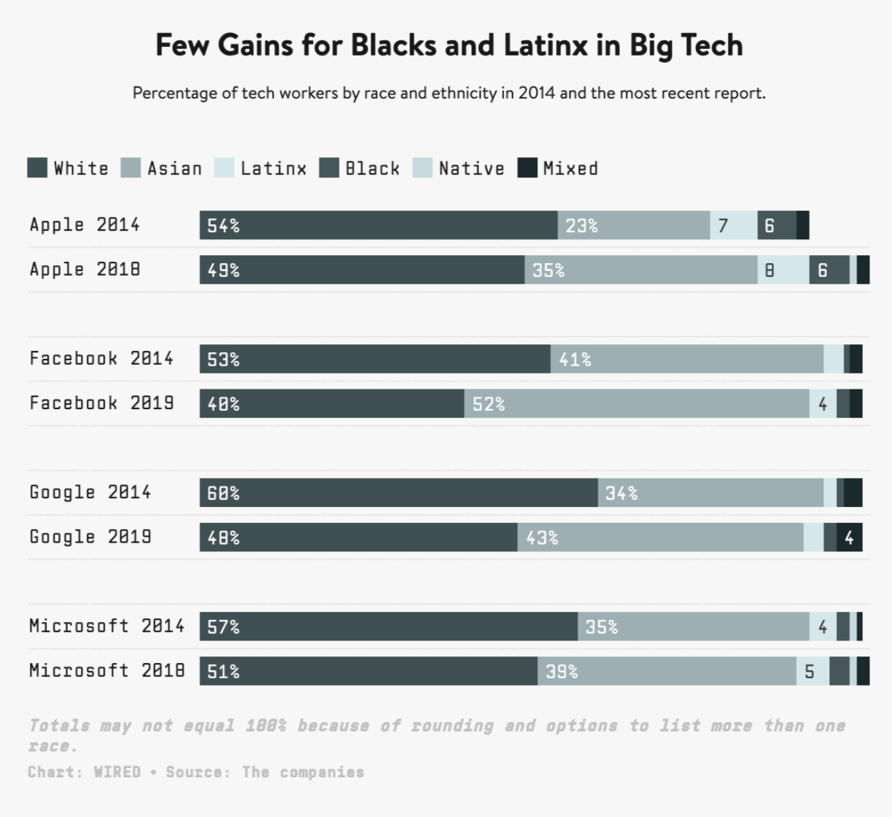
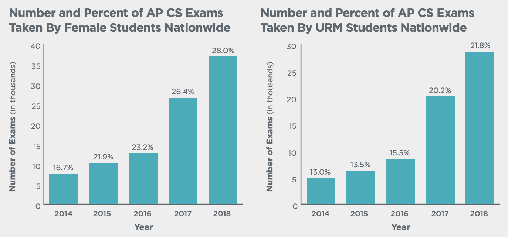
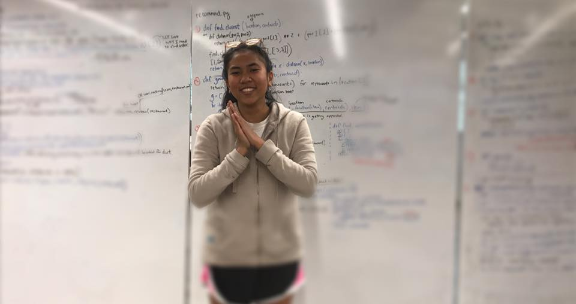

Why I’m going into teaching Computer Science
A story of making CS education more equitable.
I took my first Computer
Science class over the summer
when I was in the 10th grade. I dragged and dropped my first-ever line of code in Scratch. Our
goal
was to create any story we wanted to share with the class. I remember the thrill of clicking the
green flag (  ) to run
my code as I watched the
program run as I had hoped. That summer, I learned to
create art using Computer Science.
) to run
my code as I watched the
program run as I had hoped. That summer, I learned to
create art using Computer Science.
My high school didn’t offer CS classes so I never heard of them until I became a Summer Math & Science Honors (SMASH) scholar. SMASH provided a tuition-free, intensive STEM education to low-income, students of color. For three summers in a row, I lived in the UC Berkeley dorms and learned from majority Black & Brown teachers and classmates. In and out of our classrooms, we discussed our cultural identities, the stereotypes we faced, parental expectations, and our career aspirations. At SMASH, I felt like I could bring my full self to class, free of any negative judgment. I felt liberated not to hide being an immigrant or a low-income student; in fact it was encouraged to dive into those identities.
I recognize that having access to CS classes is not the norm for every Black & Brown student nor is having a safe classroom to bring their authentic selves into. SMASH was an opportunity for me to explore both. This empowered me to see myself to succeed in any industry that may not be representative of my lived experiences. My cultural differences and worldviews are part of my superpowers that shape my work. It is not something to hide but rather elevate.
The ripple effect of the tech access gap
In California, 39% of high schools offer CS courses. A 2019 report by the Kapor Center, a leader in diversifying the tech & entrepreneurship sectors, highlighted that low-income students, students of color, and rural students are least likely to have access to these courses. This disparity and access gap in our educational institutions reflect the tech industry’s lack of diversity problem. Since big tech companies including Facebook, Google and Apple released their diversity reports in 2014, the number of underrepresented employees in technical roles like Software Engineers and Data Scientists increased by less than a percentage point five years after. Their numbers are not impressive to start with given Black, Latinx & Native communities make up just about 10% of their tech workforce:

This lack of diversity is not news but it is a horrifying trend with negative consequences. A 2019 National Institute for Standards and Technology (NIST) study on facial-recognition systems from many tech companies including Microsoft and Intel found that these systems misidentified people of color up to 100 times more than white people. They are currently used by local governments and airports and can lead to detrimental consequences. Given POCs are most misidentified from these technologies, they are susceptible and vulnerable to be wrongly accused and convicted within the criminal workforce. Part of the reason this problem exists is that the datasets that these systems take in are not enough and representative of POCs. Are these data inefficiencies the types of compromises we need to make for “innovation”? Absolutely not.
A tech workforce that is majority comprised of white, cis-males is a part of the reason that these product deficiencies exist. Their lived identities are drastically different from Black and Brown people. Racially-speaking, POCs don’t benefit from white privilege. Gender-speaking, non-binaries and women of color don’t benefit from male privilege. Because of these differences in experiences, a white, cis-male dominated workforce may not recognize how their technologies and products oppress underrepresented communities.
Bringing in a more diverse workforce is part of the solution. The other is retaining them and ensuring that the workplace welcomes their authentic selves. As a ripple effect, these harmful consequences on POC communities may be mitigated.
The tech access gap in K-12
The Kapor Center created the 2018 Leaky Tech Pipeline report to highlight and address the various barriers that prevent underrepresented communities from landing a tech career. These barriers start in K-12 and include the digital divide, lack of school funding & resources, and psychosocial barriers. When I came across this research, I realized how many of these barriers I experienced.
Digital Divide
More than 21 million people in the U.S. don’t have access to broadband connection. Without broadband, students can’t access school/e-learning technologies including Google Classroom, youtube videos, and Google Drive at home. This puts them at a disadvantage when working on homework or projects that require the Internet. Without the option to bring this work at home means that they have a limited time to complete it at school or other places that offer broadband.
COVID-19 has shed light to this problem from school closures to remote learning. Rural households, lower-income neighborhoods and communities of color have deeply been affected due to their lack of broadband connection. Some families have found creative solutions by leveraging public WiFi spots including their high school’s parking lot. Internet service providers have stepped up by offering free or discounted access to WiFi for the next few months. For those that don’t have access to devices, schools and families have fundraised to collect and distribute Chromebooks to students. As great as these current initiatives are, it shouldn’t take a global pandemic to address a problem that has negatively affected predominantly rural, low-income and POC communities way before COVID-19.
Although I personally didn’t experience the digital divide, I had friends and neighbors that did. Thankfully, there were organizations that supported families in my neighborhood to receive broadband connection. When I learned CS, it was essential for me to use the Internet to read forums regarding my questions, watch tutorial videos, connect with my peers, submit my assignments and etc. For students not to be behind in these classes or our current realities of remote learning, access to both laptops and the Internet is crucial.
Lack of school funding and resources
A 2019 Code.Org report on the “State of Computer Science Education Equity and Diversity” shows that 45% of U.S. high schools teach Computer Science classes. The students that take these classes vary in gender and ethnicity. For example, AP Computer Science classes were taught in 5,400 schools and taken by 130,904 students. Out of these students, 28% of test takers were female and 21.8% were underrepresented minorities (Black, Latinx, Native or Pacific Islander). Since 2014, data has shown a gradual increase of test takers from these communities:

On an intersectionality perspective, the percentages are drastically different for girls of color. In 2017, out of all high school students that took AP CS, only 4% were Latinx, 2% were Black girls and less than 1% were Native girls. The lack of access to these classes and experienced teachers to teach is part of the reason these statistics are low.
Given girls, non-binary and POC students have had less exposure and engagement with CS classes, it is imperative that teachers apply culturally-responsive teaching (CRT) practices. Zaretta Hammond’s Culturally Responsive Teaching & The Brain emphasizes relationship-building, cognitive scaffolding and critical social awareness when teaching underrepresented communities specifically POCs. When I was a SMASH scholar in high school, my teachers applied CRT by genuinely checking-in on me outside the class material and encouraging my friends and I to work on projects that would make an impact in our communities. I became more curious to learn how to apply STEM concepts inside and outside the classroom. It helped feeling valued and empowered to connect my studies with causes that I cared about.
It takes personal commitment, training programs, self-reflection and teacher-centered communities to develop effective practices to teach underrepresented students in CS. On a policy-wide level, 38 states currently implement statewide CS teacher certification. I specifically enrolled in Berkeley’s BE3 teaching program because of their focus on equity and authorization to teach CS. Not all states provide this opportunity for aspiring teachers that want to teach CS.
Before and after BE3, I’m committed to educating myself on how minority students experience oppression in our schools. I know that reading books on this topic, participating in conversations with other teachers and seeking feedback from my future students are some of the actions I can take to ensure that I cultivate a safe and welcoming space for them. I am also committed to learning new technologies and teaching Computer Science in engaging and relevant ways similar to my SMASH experience. Growing as an educator is a necessity and my responsibility for my students. I’m grateful that I have the opportunity to dive more into this through BE3.
Psychosocial barriers
Growing up, I had no mentors in the tech field. I didn’t know what tech careers were nor how to land them until I became a SMASH scholar. Since I didn’t have continued exposure to CS outside of my SMASH summers, I didn’t develop my interest or skills. A 5-week summer class was definitely not enough time for me to have the foundational skills and self-confidence I needed to succeed in my college CS class.
I failed my Intro to CS class in college twice. I was playing catch-up with every new lesson and struggled to apply the concepts I learned into the homework and projects. It got so bad that most of the time I wrote code, my mind thought of how incapable I was in solving the problem. Thoughts like: “you can’t do this”, “you don’t know what you’re typing”, and “you’re too behind to know what to do” kept looping in my mind. Slowly I believed these stories. I didn’t realize it then, but this negative self-efficacy is a consequence of my lack of exposure to the subject, role models in the tech field, and the stereotypes I had of who Computer Scientists, programmers, and software engineers were. Frankly, I didn’t fit the white and male stereotype. I also rarely asked for help because I paralyzed myself into believing that whatever I asked would be a dumb question considering how behind I was. So, I hid my frustrations from others and tried to figure out the challenging concepts on my own.
On my third time taking the course, I had a lot of unlearning to do starting with the negative perceptions I had with my own ability. Whenever I repeatedly thought of myself as incompetent when I coded, I would pause my work and remind myself how much I’ve learned so far. It was an effective practice that reframed my challenge into an opportunity to keep learning. The goal was not to master a new concept, but rather to learn more than I did the previous day. Second, I made friends and mentors to code with and provide me with constructive feedback. I found comfort working with POC beginner-coders and seeking advice from my older brother. I had a small community to lean on whenever I was stuck and ask questions, free of judgement. Talking out my conceptual frustrations with my older brother, who’s a software engineer, reassured me that learning takes time. For him, studying Computer Science was a consistent journey of discovery and it’s okay if it doesn’t click right away. He encouraged being kind to myself, to take breaks, and to stay persistent as other important tools to learn CS. His advice and belief in my abilities inspired me to be kind to myself and to have fun with learning. Unlearning the negative perceptions I had in my ability to succeed in CS took time. Creating a community and finding mentors that I trusted was key to that process.

Where do I fit in this picture?
I’m going into teaching high school Computer Science because I want to be a part in bridging the access gap in CS education. For my future students that first learn the beauty and joy of Computer Science from our class, I aspire to make it accessible and relevant for them. I want to build strong relationships with my students so that I can ground my curriculum and pedagogy on their interests and aspirations. If we are going to build a website or an app, I want them to use CS to build things and solve problems they care about. And, when they get stuck, they’ll have a community amongst their classmates to work through their challenges.

One of my goals is to be the type of teacher that mentors their students to use their education to develop their curiosities and apply them towards social impact. When I was in high school, I found mentors that did just that. My lifelong mentor from the Tenderloin Boys & Girls Club shared opportunities from scholarships to part-time jobs, wrote me numerous Letter of Recs, and revised many of my applications. He and many others helped me believe in myself and saw my potential to succeed despite the barriers I’ve experienced in life. I’m striving to be that type of teacher for my future students.
Through my class, I hope that my students can see themselves belonging and succeeding in any career, especially a technical career. I plan to teach them the tech industry’s diversity gap and the barriers that persist in landing and retaining a technical career. That way, they know what to expect and that their stories and experiences are part of the puzzle in solving this problem. My hope is that our class will empower them to use CS as a problem-solving tool and leverage their lived experiences as their super powers in guiding them to create more inclusive products and opportunities for others.